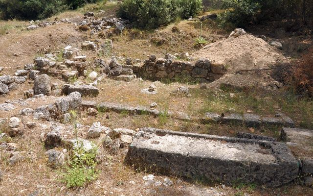

Startseite › Sehenswürdigkeiten nach Provinzen › İzmir
Der Kültür-Varlıkları-Führer verzeichnet 43 Orte in İzmir: 20 ausgrabungsstätte, 18 museum, 4 burg & historisches bauwerk, 1 sakralbau. Unten finden Sie die Höhepunkte, eine Karte und die vollständige Liste.
⭐ Höhepunkte

1 · İzmir · AusgrabungsstätteAkropolis von Pergamon
Die Akropolis von Bergama war das politische und kulturelle Zentrum von Pergamon, Hauptstadt des hellenistischen Pergamenischen Reiches, auf einem steilen Hügel hoch…

2 · İzmir · AusgrabungsstätteEphesos
Ephesos war eine der größten Hafenstädte der Antike und eines der glänzendsten Zentren der römischen Provinz Asia; in der Nähe stand der Artemistempel, eines der sieben…

3 · İzmir · AusgrabungsstätteAsklepieion von Pergamon
Das Asklepieion von Pergamon, dem Heilgott Asklepios geweiht, war eines der berühmtesten Heilzentren der Antike.
🗺 Auf der Karte
📍 Alle Orte (43)
Ausgrabungsstätte (20)
Akropolis von PergamonAusgrabungsstätte · UNESCOEphesosAusgrabungsstätte · UNESCOAsklepieion von PergamonAusgrabungsstätte · UNESCO Bergama KızılavluAusgrabungsstätte · UNESCO
Bergama KızılavluAusgrabungsstätte · UNESCO Ausgrabungsstätte AgoraAusgrabungsstätte
Ausgrabungsstätte AgoraAusgrabungsstätte Ausgrabungsstätte Ayasuluk - St.JeanAusgrabungsstätte
Ausgrabungsstätte Ayasuluk - St.JeanAusgrabungsstätte Efes Örenyeri-YamaçevlerAusgrabungsstätte
Efes Örenyeri-YamaçevlerAusgrabungsstätte Antike Stadt ErythraiAusgrabungsstätte
Antike Stadt ErythraiAusgrabungsstätte Eski Smyrna (Bayraklı Höyüğü)Ausgrabungsstätte
Eski Smyrna (Bayraklı Höyüğü)Ausgrabungsstätte Karabel Kaya KabartmasıAusgrabungsstätte
Karabel Kaya KabartmasıAusgrabungsstätte Ausgrabungsstätte KlarosAusgrabungsstätte
Ausgrabungsstätte KlarosAusgrabungsstätte Ausgrabungsstätte KlazomenaiAusgrabungsstätte
Ausgrabungsstätte KlazomenaiAusgrabungsstätte
Antike Stadt KolophonAusgrabungsstätte Antike Stadt KymeAusgrabungsstätte
Antike Stadt KymeAusgrabungsstätte Antike Stadt LebedosAusgrabungsstätte
Antike Stadt LebedosAusgrabungsstätte Ausgrabungsstätte MetropolisAusgrabungsstätte
Ausgrabungsstätte MetropolisAusgrabungsstätte Antike Stadt NotionAusgrabungsstätte
Antike Stadt NotionAusgrabungsstätte Antike Stadt Phokaia (Foça)Ausgrabungsstätte
Antike Stadt Phokaia (Foça)Ausgrabungsstätte Ausgrabungsstätte TeosAusgrabungsstätte
Ausgrabungsstätte TeosAusgrabungsstätte Siedlungshügel YeşilovaAusgrabungsstätte
Siedlungshügel YeşilovaAusgrabungsstätteMuseum (18)
 Museum EphesosMuseum
Museum EphesosMuseum Ahmet Piriştina Kent Arşivi ve MüzesiMuseum
Ahmet Piriştina Kent Arşivi ve MüzesiMuseum Arkas Sanat MerkeziMuseum
Arkas Sanat MerkeziMuseum Museum BergamaMuseum
Museum BergamaMuseum Çakırağa-Konak in BirgiMuseum
Çakırağa-Konak in BirgiMuseum Archäologisches Museum Bostanlı Açık HavaMuseum
Archäologisches Museum Bostanlı Açık HavaMuseum Key Museum (Klasik Otomobil Müzesi)Museum
Key Museum (Klasik Otomobil Müzesi)Museum Latife Hanım Köşkü Anı-HausMuseum
Latife Hanım Köşkü Anı-HausMuseum Museum TireMuseum
Museum TireMuseum Museum Çamlık Buharlı LokomotifMuseum
Museum Çamlık Buharlı LokomotifMuseum Museum ÇeşmeMuseum
Museum ÇeşmeMuseum Archäologisches Museum İzmirMuseum
Archäologisches Museum İzmirMuseum Museum İzmir AtatürkMuseum
Museum İzmir AtatürkMuseum İzmir Kültür Sanat FabrikasıMuseum
İzmir Kültür Sanat FabrikasıMuseum Museum İzmir Resim HeykelMuseumMuseum Efes DeneyimMuseumNaturkundemuseum der Ege-UniversitätMuseumMuseum ÖdemişMuseum
Museum İzmir Resim HeykelMuseumMuseum Efes DeneyimMuseumNaturkundemuseum der Ege-UniversitätMuseumMuseum ÖdemişMuseumBurg & historisches Bauwerk (4)
 Burg AyasulukBurg & historisches Bauwerk
Burg AyasulukBurg & historisches Bauwerk KadifekaleBurg & historisches Bauwerk
KadifekaleBurg & historisches Bauwerk Nymphaion (Nif) Laskaris-PalastBurg & historisches Bauwerk
Nymphaion (Nif) Laskaris-PalastBurg & historisches Bauwerk Şirince KöyüBurg & historisches Bauwerk
Şirince KöyüBurg & historisches Bauwerk